134
134
134
Social Science V
Recall your pledge in the school
assembly. It begins as follows.
We Indians are proud of the varied
heritage of our country. The diversity
in attire, language, tradition, etc. makes
India unique. This diversity is also
evident in physiography, climate,
India is my country. All Indians are
by brothers and sisters. I love my
country and I am proud of its rich
and varied heritage...
Page 54
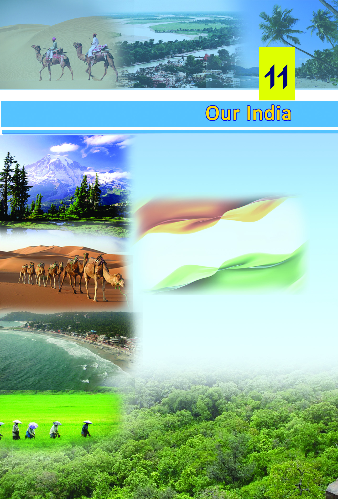
Page 55
Our India
135
135
135
vegetation, lifestyle, etc. Amidst these diversities, the Indians
live united like siblings; breaking the barriers of caste, religion
and language. This chapter will help you to know more about
the diversities of India.
India - Location and neighbouring countries
We have earlier discussed the continents. Can you identify
the continent to which India belongs?
Find out India's neighbouring countries from the map of Asia.
You may use the atlas or wall maps for this.
Have you noticed the ocean to the south of India on the map
of India provided (fig 11.1)? This is the Indian Ocean. The
part of the ocean to the east of India is known as the Bay of
Bengal and that to the west is known as the Arabian Sea.
India - States
For administrative convenience, India is divided into 29 states.
On 2014 June Andhrapradesh has been divided in to two states
namely Seemandhra and Telangana. The administrative
headquarters of each state is known as the state capital.
•
List out the 29 states and their capital cities from the map
of India.
Delhi is the National Capital Territory.
Page 56
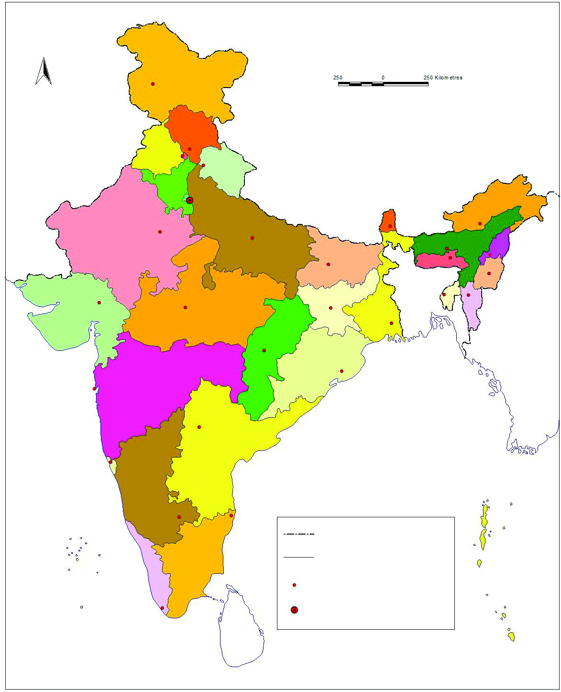
136
136
136
Social Science V
Fig - 11.1
INDIA
Political Map
International Boundary
State Boundary
State Capital
National Capital
Srinagar
Jammu & Kashmir
Simla
Himachal Pradesh
Chandigarh
Punjab
Jaipur
Rajasthan
Gandhinagar
Gujarat
Mumbai
Maharashtra
Panaji
Goa
Karnataka
Bengaluru
Kerala
Thiruvananthapuram
TamilNadu
Chennai
Andhra Pradesh
Hyderabad
Madhya Pradesh
Bhopal
Uttar Pradesh
Luknow
Uttarakhand
Dehradun
Bihar
Patna
Jharkhand
Ranchi
Odisha
Bhubaneswar
Chattisgarh
Raipur
Haryana
Delhi
New Delhi
West Bengal
Kolkata
Arunachal
Pradesh
Itanagar
Assam Dispur
Sikkim
Gangtok
Meghalaya
Shillong
Nagaland
Kohima
Manipur
Imphal
Mizoram
Aizhwal
Tripura
Agarthala
Indian Ocean
Bay of Bengal
Arabian Sea
Lakshadweep
Andaman and Nicobar Islands
N
Page 57
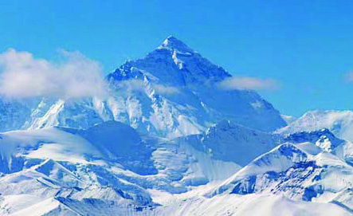
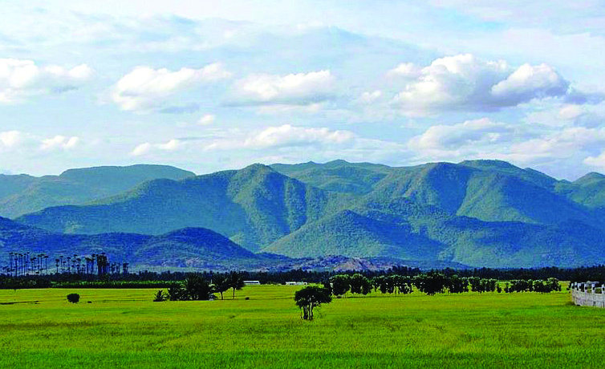
Our India
137
137
137
Other than the states, there are six union territories in India.
They are Puducherry, Daman and Diu, Dadra and Nagar
Haveli, Chandigarh, Lakshadweep, and the Andaman and
Nicobar islands.
Locate the union territories and the National Capital Territory
on the map (fig 11.1).
India - Physiography
There are different landforms like mountains, plateaus, plains
and islands on the earth. Such features of a region constitute
its physiography. The physiography of India is diverse with
mountain ranges, plains, vast plateaus, deserts, coastal plains,
and islands.
Mountains in India
You have learned about the major mountain ranges in different
continents.
The Western Ghats
The Himalayas
A part of the Himalayas, the loftiest mountain range in the
world, belongs to India. The other major mountain ranges in
India are the Aravallis, the Western Ghats, the Eastern Ghats,
the Vindhya ranges, and the Satpura ranges. They are
comparatively lower than the Himalayas in height. A number
of rivers originate from these mountain ranges.
Page 58
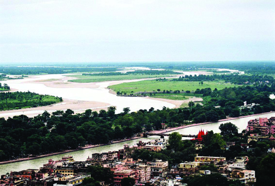
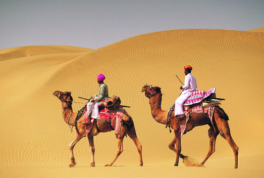
138
138
138
Social Science V
Ganga plain
Plains in India
Plains are extensive and level landforms. There is a vast
expansive plain to the south of the Himalayan mountain ranges.
These plains were formed by the deposition of alluvium
brought down by the rivers originating from the Himalayas.
These are known as the Indo - Ganga - Brahmaputra plains.
Crops
such
as
paddy,
wheat,
maize, and sugarcane
are cultivated in
these fertile plains.
Hence, this region is
also referred to as
India's granary.
Deserts in India
Strong winds, scorching heat, and extensive sand dunes are
the characteristic features of deserts in India. A major part of
the state of Rajastan, situated to the north west of India, is a
desert.
This
region, known as
the Thar desert, is
sparsely inhabited
and
the
least
cultivated due to
the scarcity of
rain.
Thar desert
Page 59
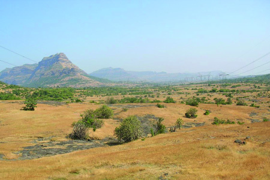
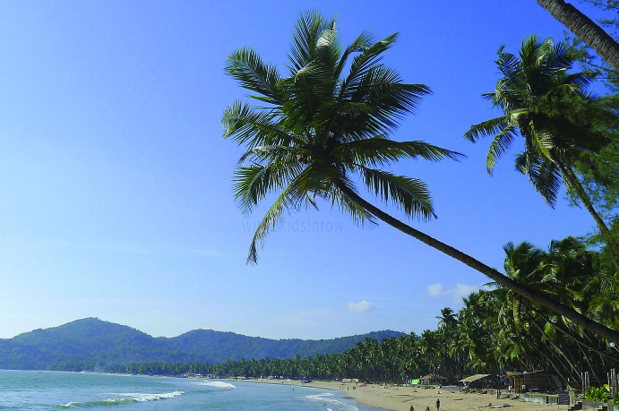
Our India
139
139
139
Plateaus in India
Plateaus are comparatively
elevated landforms with
almost flat surfaces. The
Deccan plateau is the
largest in India. The other
major plateaus are Malwa
and Chotanagpur.
Coastal regions in India
Deccan plateau
A coastal region
Coastal regions
are low lands
bordering the
sea. India has a
long coastline.
Identify the southern most coastal state from the map of India.
Islands in India
The land surrounded by sea is called an island. The
Lakshadweep islands in the Arabian Sea and the Andaman &
Nicobar islands in the Bay of Bengal are part of India.
Page 60
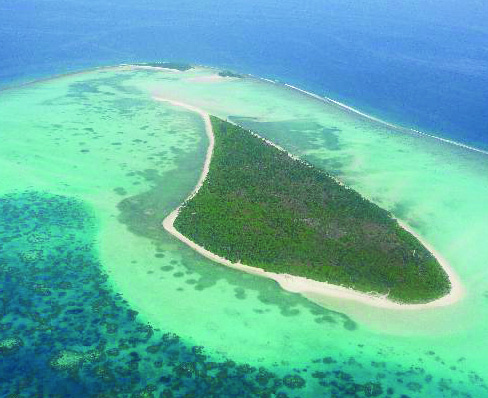
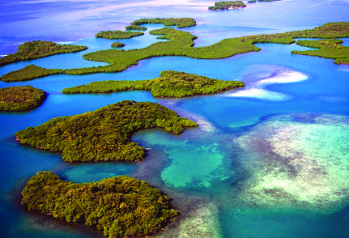
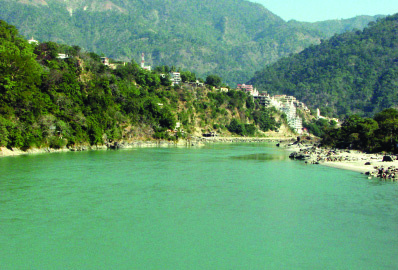
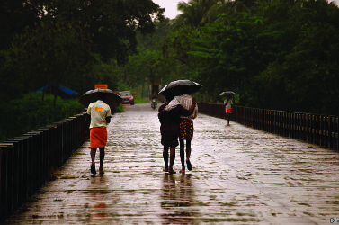
140
140
140
Social Science V
A Lakshadweep island
Andaman & Nicobar islands
The River Ganga
India - Rivers
We have discussed the major
mountain ranges in India.
Many of these mountain ranges
are the sources of a number of
rivers. The Indus, the Ganga,
and
the
Brahmaputra
originating
from
the
Himalayas, and the Mahanadi,
the Godavari, the Krishna, the Kaveri, the Narmada, and the
Tapti originating from the high altitude regions of peninsular
India are the major rivers of India.
India - Climate
Diverse climate prevails in
India. India experiences
rainy, winter, and summer
seasons. Of the two rainy
seasons in India, the first
extends from June to
September
and
the
second, from October to
November. The western
In the rainy season
The pictures given below are of these islands. Identify the
location of the Lakshadweep and the Andaman & Nicobar
islands from the map (Fig 11.1)
Page 61
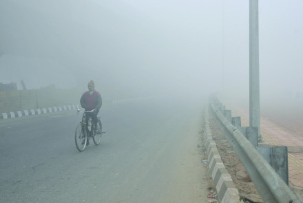
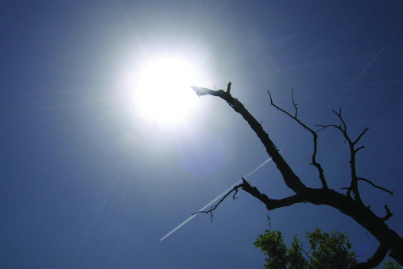
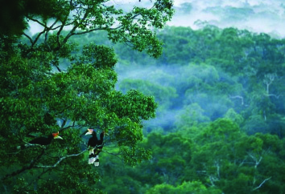
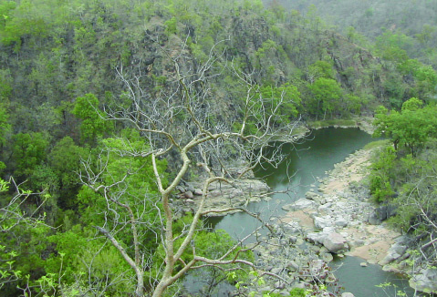
Our India
141
141
141
coastal region bordering the
Arabian Sea and the north
eastern states receive heavy
rainfall during these periods.
Cherrapunji in Meghalaya
receives the highest rainfall in
India. The agricultural sector in
India is highly dependent
on these rainy seasons.
The winter season in India
is
experienced
from
December to February. It is
followed by the summer
season from March to May.
A glimpse of winter
A summer scene
India - Natural vegetation and animal life
You have learnt that India's physiography and climate are
diverse. Consequently, diversity can also be found in plant
and animal life. India's natural vegetation includes rain forests,
decidious forests, thorn and shrub forests, and grasslands.
These regions which are the habitat of different types of birds
and animals such as elephant, lion, tiger, leopard, wild gaur,
deer, peacock, and hornbill are undoubtedly a treasure of India.
Rain forest
Deciduous forest
Page 62

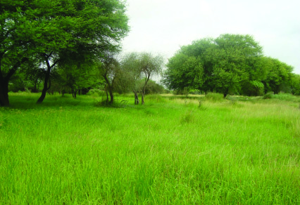
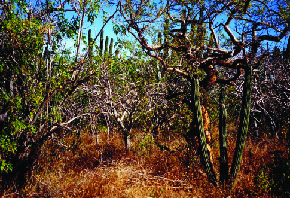
142
142
142
Social Science V
We, the Indians
You are now aware of the diversties in physiography, climate,
and plant and animal life in India, aren't you? There is a
corresponding diversity in the human life as well.
While rice is the staple food of the South Indians, it is wheat
for the North Indians. What might be the reason for these
regional differences in food habits? Discuss in the class.
The people of South India commonly use cotton clothes, while
the people living in the moutain regions prefer woollen clothes.
Do you know why?
Festivals are diverse. Onam is the regional festival of Kerala.
The major festival of Tamil Nadu is Pongal. Bihu is celebrated
in Assam and Holi in North India. Such diversities are evident
in rituals also. Try to find out more examples for the cultural
diversity of India.
•
Language
•
Grassland
Thorn forest
Page 63

Our India
143
143
143
The other parts of India is entirely different from where we
live. Though there are diversities in physiography, climate,
vegetation, animal and human life; India stands united as a
single nation. We are indeed proud of the rich and varied
heritage of India.
Summary
•
India is located in the south of Asia.
•
India is divided into 28 states, 6 union territories and a
National Capital Territory.
•
The physiography of India includes mountains, plateaus,
plains, coastal regions, and islands.
•
The major rivers of India are the Indus, the Ganga, the
Brahmaputra, the Mahanadi, the Godavari, the Krishna,
the Kaveri, the Narmada, and the Tapti.
•
India experiences three seasons as rainy season, winter
season, and summer season.
•
Rainforests, deciduous forests, thorn and shrub forests,
grasslands, etc. are the major types of vegetation in India.
•
Though diversities exist in physiography, climate,
vegetation, language, dressing, food habits, rituals, and
festivals; India stands united as a single nation.
Significant learning outcomes
The learner can:
•
explain that India is a part of Asia and can define its
location, size, neighbouring countries, states, and capitals.
•
describe the diversities in physical features of India such
as physiography, rivers, climate, vegetation, and animal
life.
Page 64


144
144
144
Social Science V
•
describe the diversities in India's cultural features like
language, dressing, rituals, festivals, food habits, and
agricultural practices.
•
explain the concept of 'Unity in Diversity'.
Let us assess
1.
Find out the capital cities of the following states.
• Arunachal Pradesh
• Rajasthan
• Himachal Pradesh
• Chattisgarh
• Mizoram
• Goa
2.
Explain the features of India's physiography.
3.
List out the rivers originating from the Himalayas and those
originating from the high altitude regions of peninsular
India.
4.
Describe the features of the climate in India.
Extended activities
•
Observe the political map of India and list the 28 states
and their capitals in the following table.
Sl. No.
State
Capital
1
Arunachal Pradesh
Itanagar
2
•
•
28
•
Prepare a digital album on the diversity in dressing of
India.
•
Locate the mountains, plains, and plateaus of India in atlas
or wall maps. (India : Physical map)